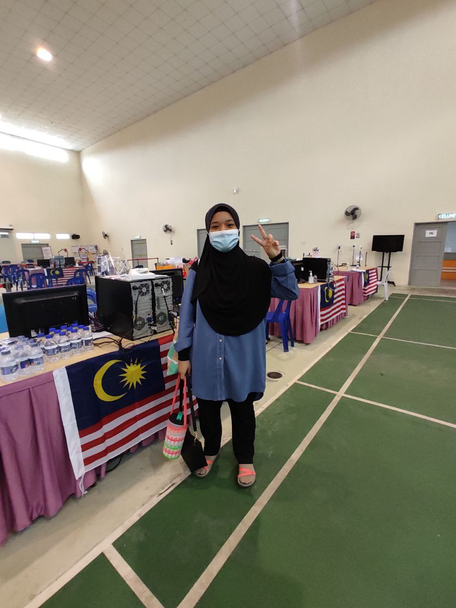
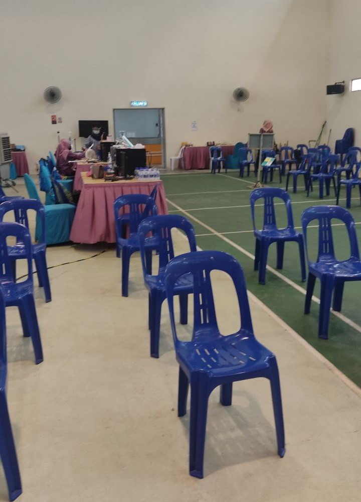
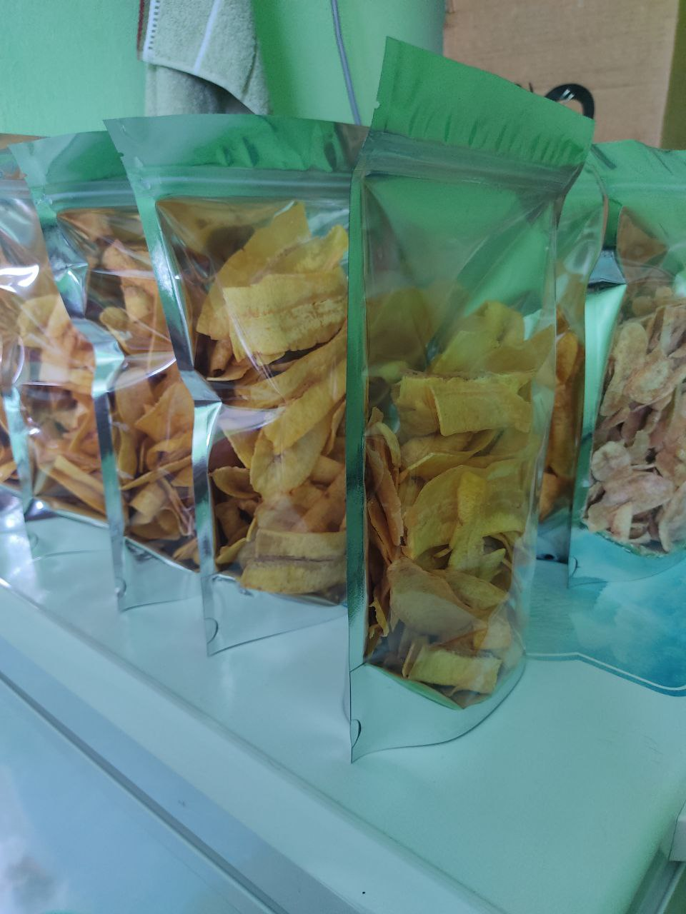
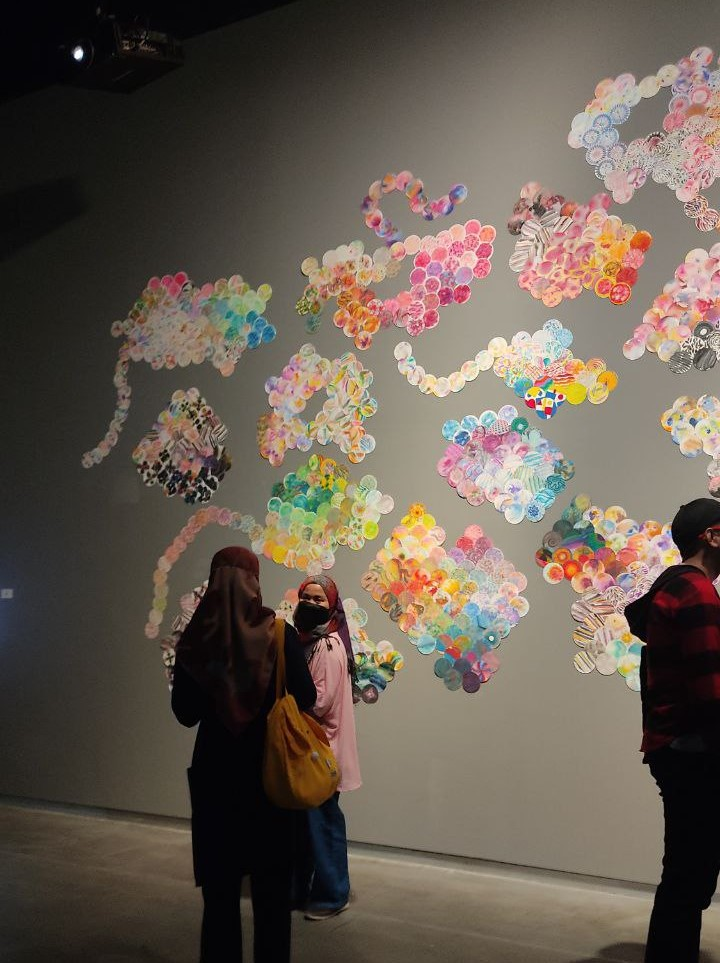

For the first time, I have joined as a volunteer at the COVID-19 Vaccination Centre.
In this programme, I was assigned to guide people through the procedures they need to go
through before they are injected. This was a valuable experience because I was able to
communicate directly with outsiders. In addition, the service of the KKM staff is also very
friendly for volunteers like us. Our duty hours are from 8 a.m. to 5 p.m. But, on average,
people come to take the vaccine at 10 o'clock or more. In the evening, only a small number
of people. However, there are also people who cannot come on the set date and ask to move to
another day. Overall, being a volunteer at the vaccination centre has given me valuable
experience that cannot be bought anywhere.


Start up small business for ENT300
(12 June 2022)
In this activity, I have decided to sell the banana chips that I made by myself.
This includes buying plantains, the making process until packaging.
The selling medium that I use is by promoting the product at Instagram and also WhatsApp platform.
Roughly, the duration of these activities took was about a month.
Through the project I have learned many valuable experiences that could not be bought with money.
For instance, I had given myself a big lesson of patience. This includes all the process of brainstorming the
idea of the business until the finishing the final product. Besides, through this project it also had
encouragement in being creative.

Attending "ILHAM ART" exhibition
(01 June 2022)
On June 1, 2022, I went to a show at the ilham gallery. My friend and I took a train early in the morning.
When we arrived, there was no entrance fee, but we had to wait for our time to enter.
There are several exhibitions and events on display. A few of these include a canvas painting show, 3D games,
and plenty others. In addition, the gallery also provides a gift shop that can be accessed outside the building.
The exhibition has gathered a wide variety of art from various artists. It also has something implicit and
is quite difficult to understand. But, to know more about the exhibition, we are also supplied with a booklet
that contains information for each work of art.

Visiting Malacca Archive's
(08 December 2022)
On 9th December 2022, our class organized an academic visit programme to the National Archives of Malaysia Malacca State Branch. The visit began at 7.00 a.m and concluded at 12 p.m.
A total of 30 students from N5IM244EKA participated in this academic visit. This visit
This programme was held with the aim of getting to know the importance and management of archives in
the Melaka state branch in more depth. In this academic visit, students were exposed to various activities
carried out in the National Archives of Malaysia at the Malacca State branch. This includes the cleaning
archival materials, touring repository warehouse, exposition of the compass system’s behind-the-scenes workings,
and the conservation of archival materials process. Therefore, this programme does not only reveal the
importance of the archive but also touches on all aspects of the activities carried out to support the archive’s
function.